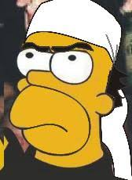
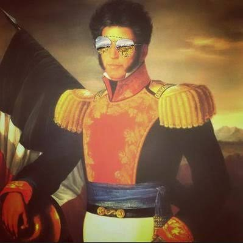

|
Boletín Histórico e Identidad Nacional
|
Inicio Efemérides Biografías Análisis |
Clérigo humanista que articuló el primer levantamiento popular y promulgó la abolición de la esclavitud en el territorio insurgente.
Pieza central en la red conspirativa de Querétaro; su oportuna advertencia impidió la desarticulación prematura del movimiento.

Brillante estratega político y militar que sentó las bases legislativas del Estado en los Sentimientos de la Nación.

Caudillo inquebrantable de la sierra sur que preservó la resistencia insurgente hasta consolidar el pacto de pacificación.